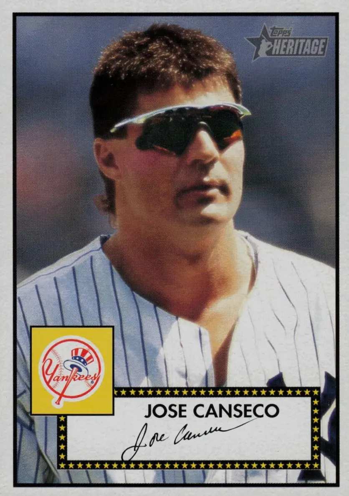

José Canseco "The Chemist"
Career Highlights & Facts
(Facts are AI-generated and may require verification)
- Became the first player in Major League Baseball history to join the 40-40 club during the 1988 season.
- Earned the 1986 American League Rookie of the Year award and the 1988 American League Most Valuable Player award.
- Won two World Series championships, one with the Oakland Athletics in 1989 and one with the New York Yankees in 2000.
Would you like to find out more about José Canseco?
Career Totals
| WAR | AB | H | HR | BA | R | RBI | SB | OBP | SLG | OPS | OPS+ |
|---|---|---|---|---|---|---|---|---|---|---|---|
| 42.4 | 7057 | 1877 | 462 | .266 | 1186 | 1407 | 200 | .353 | .515 | .867 | 132 |
Statistics via Baseball-Reference.com
The Original Clue